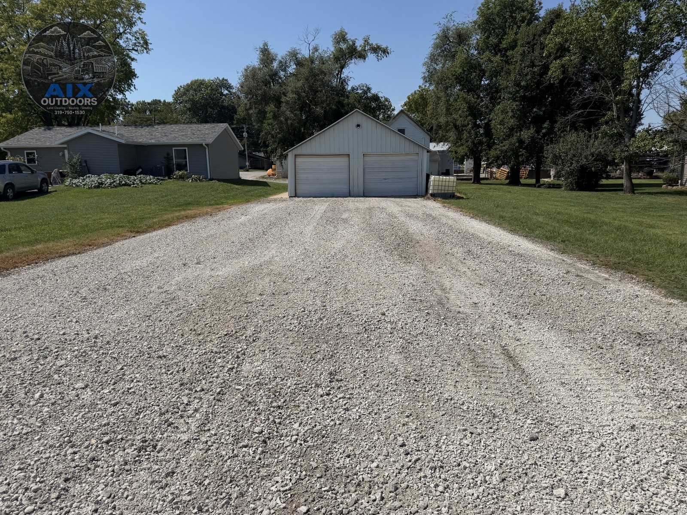
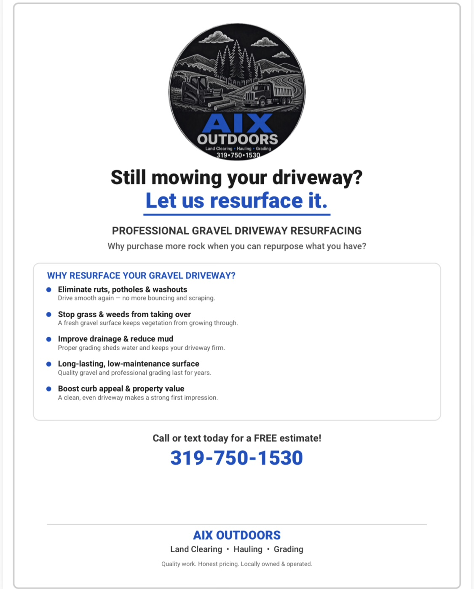
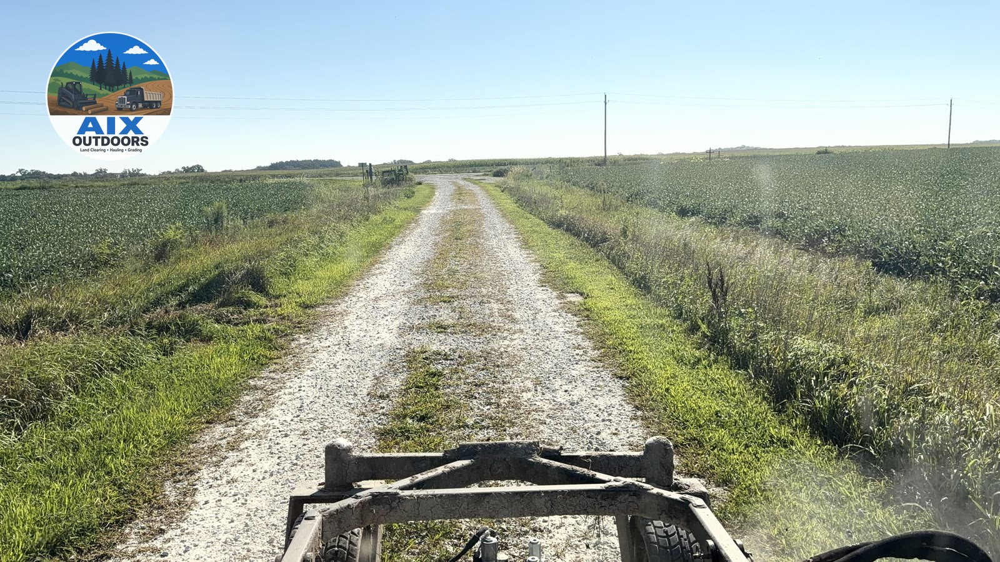
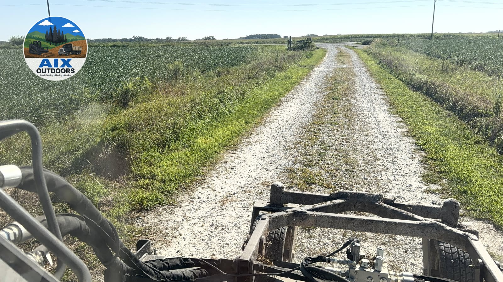
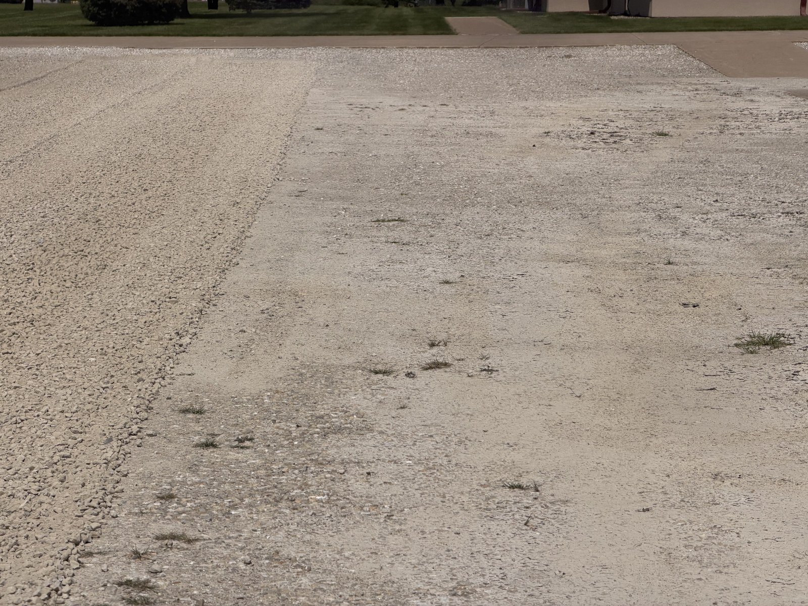
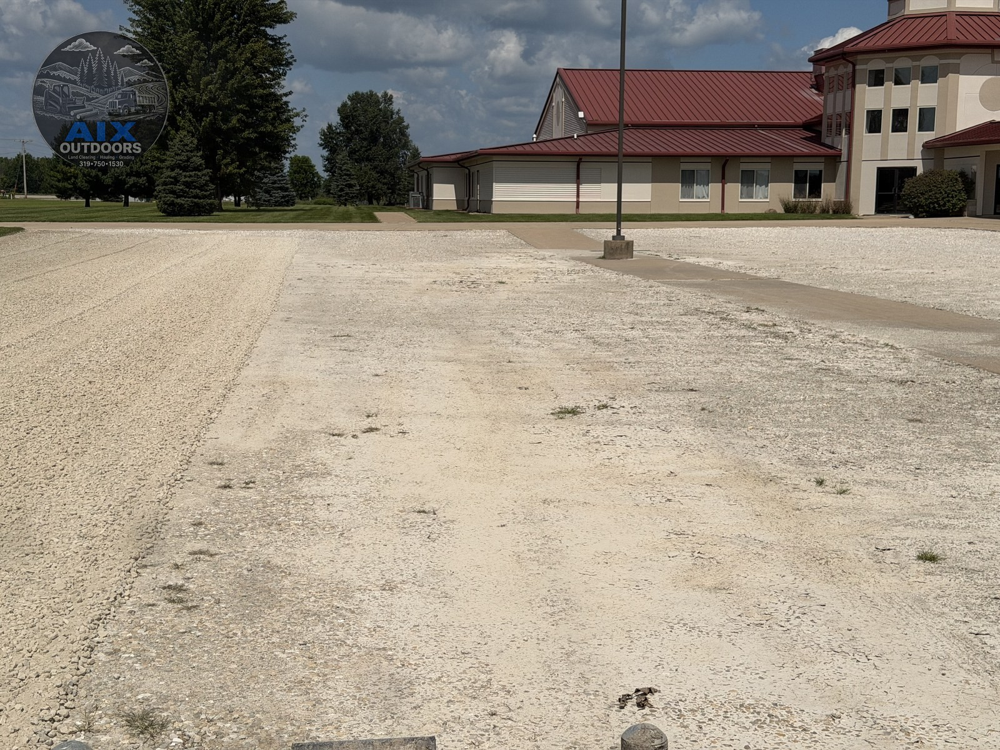
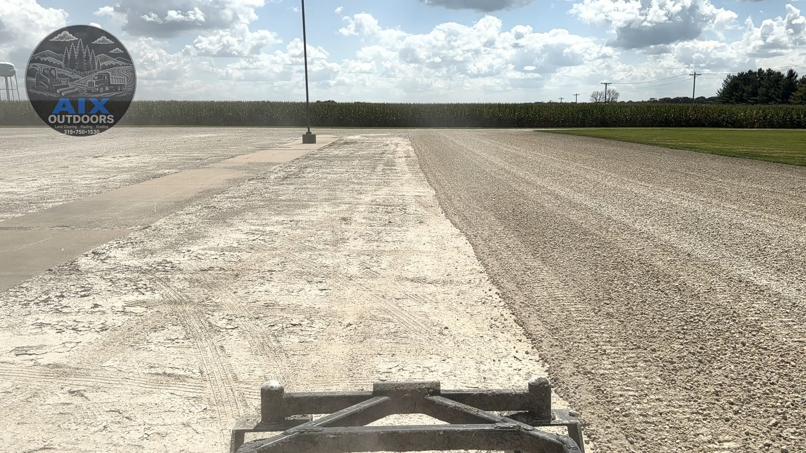
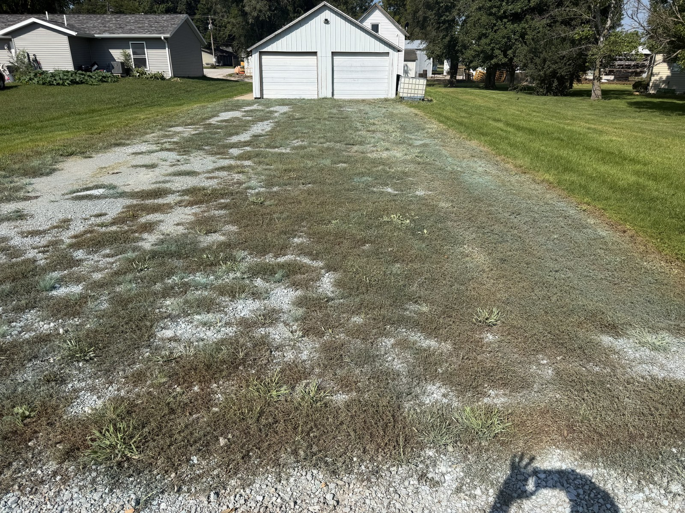
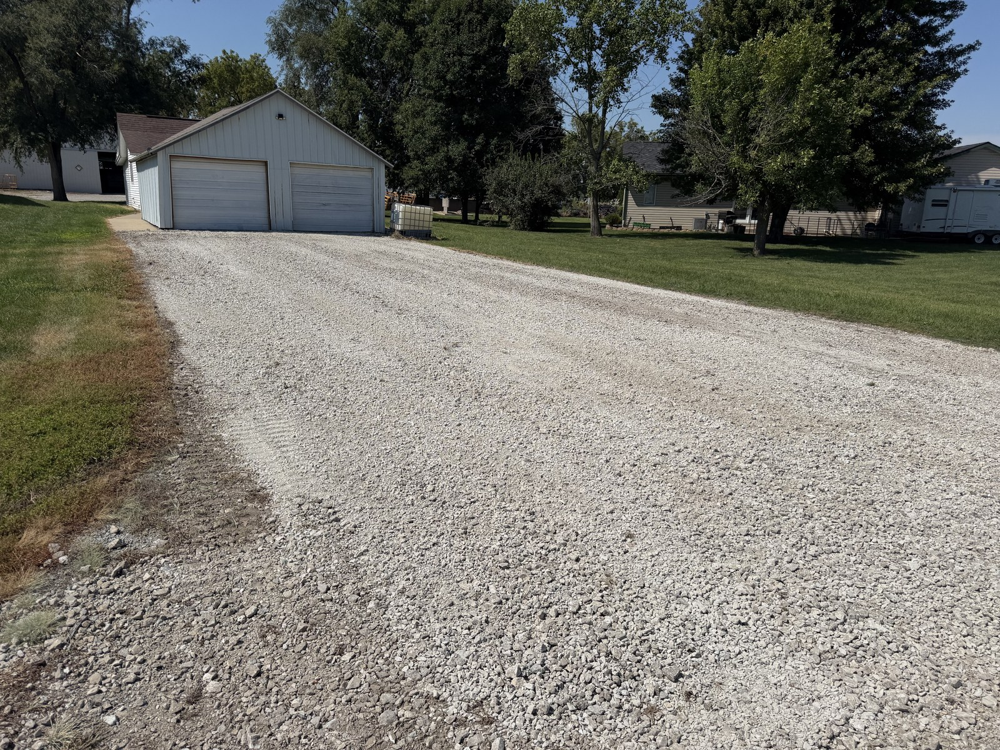
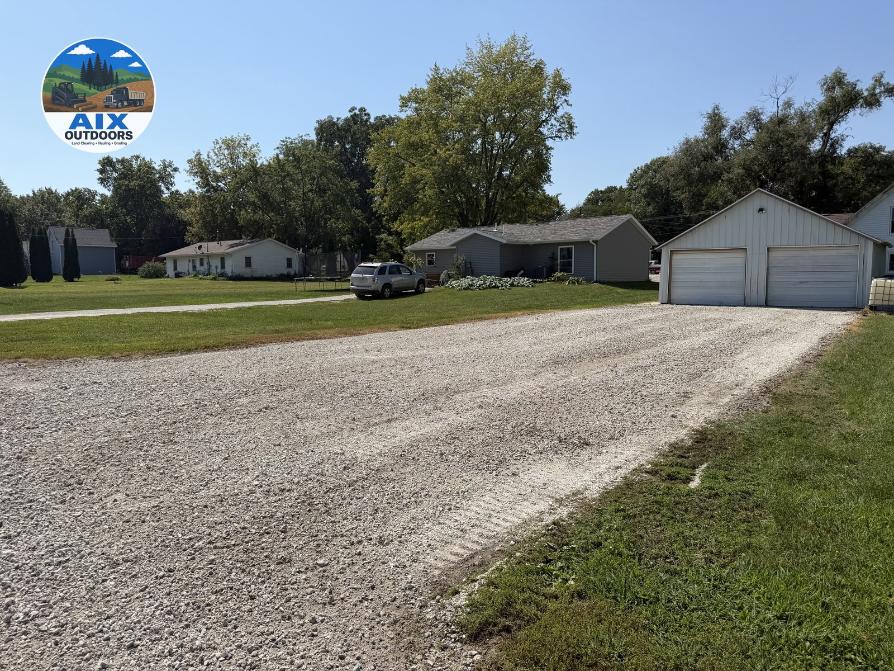

Professional gravel driveway resurfacing
Gravel driveway resurfacing and grading for farm lanes and rural entrances. Why purchase more rock when you can repurpose what you have? Re-crown, ditch, and compact so the lane survives the plot trailer, the combine neighbor, and February.
Existing gravel lanes only in this sample scope: pull the crown back, reset ditches where we can reach them, and lay a compacted lift — often by reshaping and compacting the rock you already have before buying more. Sample from $9.50 / linear foot for a 4-inch lift on a standard farm width. Stone index and haul distance float. Dump-truck delivery of that stone is the hauling line when the pit is not the farm. You do not want ruts or a mess left behind — that is the finish condition.
What you get
Gravel resurfacing · sample from $9.50 / linear foot. Labeled for this sample only — not a bid, not an offer.
Call or text 319-750-1530Request a free estimate
Call or text today for a FREE estimate!

Still mowing your driveway? Flyer copy used on this page — professional gravel driveway resurfacing from AIX Outdoors.

Sound familiar?
More than fresh rock on top
Re-establishing crown and ditch, resetting culverts that are actually shot, and laying a compacted lift is what controls water — and water is what breaks a lane. Dumping a load of gravel on the same broken profile looks fine for a few weeks and washes out again the next hard rain. Widening and a proper stone index are scoped up front, not discovered after the fact.
When resurfacing is the wrong scope
If the base is gone or the route genuinely needs to move, a resurfacing pass won’t fix it — that’s a rebuild, and we’ll scope it as one instead of skimming rock over a problem that’s still there underneath.
Gravel driveway resurfacing · real job footage
Real grading and resurfacing footage. Picture the same finish on your driveway — crown back, grass out of the middle, a surface you can drive without apologizing.
Request resurfacing on your propertyCall / text 319-750-1530
Gravel driveway resurfacing · real job photos
Still photos from gravel driveway and lot work. Picture the same grade and stone on your entrance.








Pricing · SAMPLE
Most quotes are by linear foot of lane at a stated width and lift. Length and how broken the crown is drive the size more than “how deep the potholes look.”
Sample from $9.50 / linear foot for a 4-inch lift on a standard farm width (design sample — not a bid). Stone index and haul distance float.
What changes the number
Good to know
Most farm lanes that keep failing are not failing because the gravel is bad. They are failing because the lane has no way to shed water, so every rain sends it down the middle instead of off to the sides. Once water runs along the surface, it carves — first a groove, then a rut, then a washout that eats a truckload of stone in one storm.
The fix is shape, not just more rock. A proper crown — high in the center, sloping to both edges — sheds rain to open ditch lines. Culverts at low crossings need to match what the field actually drains. Adding stone on top of a lane that lost its shape just follows the same broken profile. Re-cutting the crown and resetting the ditch before the new lift is what makes a lane hold for years instead of needing stone again next spring.
319-750-1530 · Quality work. Honest pricing. Locally owned & operated.